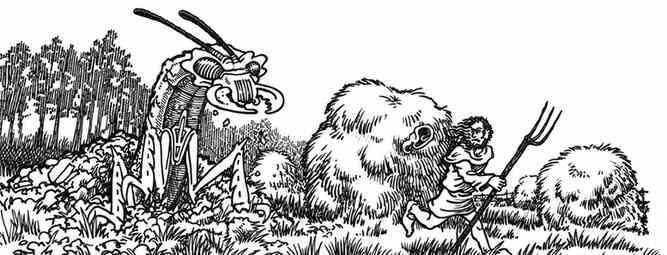
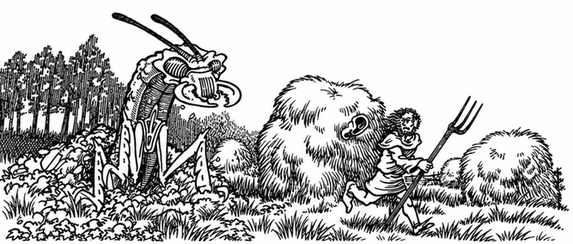

索引 · Index


下列索引按原书索引主题整理，并在条目后标出原书印刷页码；涉及《玩家手册》的页码以“PHB”标记。CHM 的全文检索也可用于查找译文中的术语。
A 字头 · A
| 条目 | 页码／参见 |
|---|---|
| 属性，角色 | 15；PHB 9–13 |
| 属性生成 | 11、100 |
| 属性提升（书籍、手册等） | 136、138–139、149–150、155 |
| 酸液 | 64–65、81 |
| 角色年龄、衰老 | 12–13 |
| 长寿药水 | 126 |
| 衰朽之杖 | 134 |
| 荒野冒险 | 49–63 |
| 炼金术士 | 29、116 |
| 阵营，相反阵营头盔 | 142 |
| 阵营，剑 | 142 |
| 护甲 | 27–32、装备章节 |
| 圣物 | 155 |
B–D 字头 · B–D
| 条目 | 页码／参见 |
|---|---|
| 诗人 | 117–119 |
| 扳弯铁条／抬起闸门 | 145；PHB 9 |
| 书籍、魔典与手册 | 136 |
| 城堡 | 106–107；荒野随机遭遇 182–183 |
| 职业限制 | 19；参见各职业条目 |
| 创建角色 | 11–12；PHB 8 |
| 魅力 | 15；PHB 13 |
| 魅惑与控制 | 104、118；参见怪物魅惑能力与相关法术 |
| 城市与城镇遭遇 | 191–194；社会阶层 89–90 |
| 气候与生态 | 87–88 |
| 战斗 | 61–84、104–105；空战 50–53、水战 54–56 |
| 命中矩阵 | 73–79 |
| 建造、防御数值 | 106–110 |
| 掩蔽与隐蔽 | 64–65 |
| 诅咒 | 121；参见诅咒药水与祝福术逆转效果 |
| 伤害 | 61–84 |
| 角色死亡 | 15、110；参见复活 |
| 神祇 | 23–25、38–39、111–112 |
| 恶魔与魔鬼 | 86–87；参见随机遭遇、怪物图鉴 |
| 敏捷 | 15；PHB 11–12；护甲等级加值 28 |
| 骰子 | 9–10 |
| 疾病 | 13、82–83 |
| 距离 | 39、62 |
E–H 字头 · E–H
| 条目 | 页码／参见 |
|---|---|
| 负重 | 35、225；常见物品负重见附录 O |
| 经验 | 85–86 |
| 探索荒野 | 47–63、101–103 |
| 追随者 | 18–22、25、29 |
| 赌博 | 附录 F，215–216 |
| 宝石与珠宝 | 26–27、138–141 |
| 侏儒、精灵、矮人 | 角色种族；参见 PHB 13–18 |
| 治疗 | 82、105 |
| 受雇者与随从 | 29–34 |
| 生命骰与生命值 | 25、61–84 |
| 圣水／邪水 | 114–115；PHB 法术说明 |
| 盗贼能力 | 27–29 |
I–M 字头 · I–M
| 条目 | 页码／参见 |
|---|---|
| 先攻 | 62、104 |
| 隐形 | 102、134 |
| 灵能 | 77、附录 C；另见 PHB 附录 I |
| 法术 | 40–60；法术表与法术说明见 PHB |
| 魔法物品 | 121–167 |
| 魔法研究 | 115–118 |
| 魔法抗性 | 怪物条目；附录 E |
| 迷宫与地下城 | 附录 A、I |
| 近战 | 61–84、104–105 |
| 怪物 | 86–88、附录 C、E；另见《怪物图鉴》 |
| 怪物召唤 | 附录 M |
N–R 字头 · N–R
| 条目 | 页码／参见 |
|---|---|
| 非玩家角色 | 100–106、110–114 |
| 不死生物，驱散 | 65–66、75–76、104；PHB 20–21 |
| 毒药 | 82–83、116 |
| 药水 | 125–127、附录 K、P |
| 复活与复苏 | 110、附录 N |
| 豁免检定 | 各职业、怪物与法术条目 |
| 侦察 | 29–30 |
| 召唤动物 | 附录 L |
| 陷阱 | 附录 G、H；随机地下城见附录 A |
| 宝藏 | 121–167、附录 V（PHB） |
S–Z 字头 · S–Z
| 条目 | 页码／参见 |
|---|---|
| 传送与位面 | 111–112；参见星界、以太位面 |
| 时间与轮次 | 39、61–62、附录 O |
| 盗贼 | 27–30；参见盗贼能力 |
| 回合与分段 | 61–62、附录 O |
| 陷阱与机关 | 附录 G–H |
| 不死生物 | 65–66、75–76、104；附录 C–E |
| 武器 | 31–35、36–38；角色装备章节 |
| 荒野 | 附录 B–C |
| 愿望术 | 136、155；角色属性提升 |
| 经验值 | 85–86、怪物条目 |
原书附带速查页 · Quick Reference Sheet
原书索引之后附有一张可撕下的速查页，重列常用物品负重、护甲数据及受雇者费用。为避免把同一规则表重复维护，这里直接跳转到本书中的完整译表：
这张速查页的其余内容与上述条目相同；原书标注为可撕下保存，故本页保留其查阅入口，不另造一套重复表格。